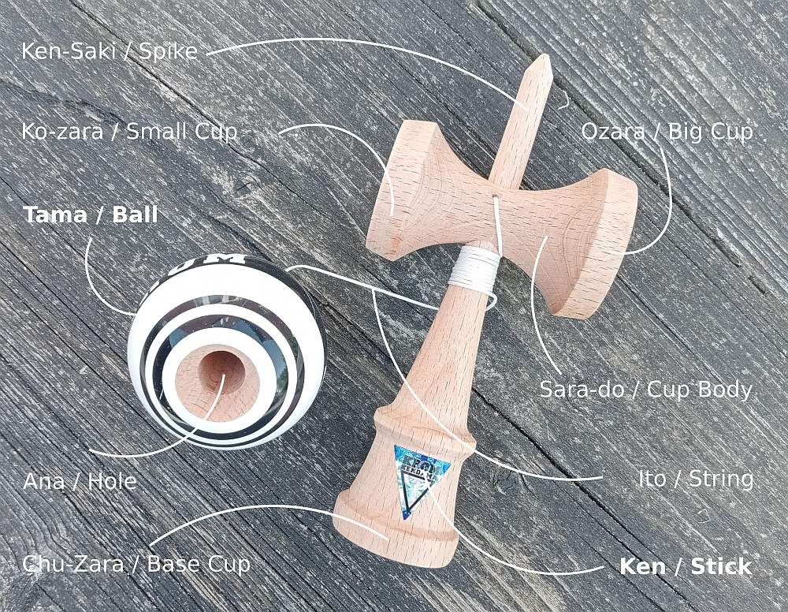

De Kendama is een eeuwenoud behendigheidsspel in een nieuw jasje; een traditioneel Japans stukje speelgoed. Het spel wordt gespeeld door mensen in alle leeftijden.
Als je kendama speelt, zul je merken dat je je beter kunt concentreren, je coördinatie, geduld en creativiteit toenemen en je je meer verbonden voelt met anderen. Dit zijn allemaal essentiële eigenschappen om een succesvolle kendamaspeler te worden, en ze zullen zich blijven ontwikkelen naarmate je meer speelt. Omdat kendama zo'n niche is, zul je snel een sterke band opbouwen met andere kendamaspelers die je ontmoet. In een wereld van smartphones en computers biedt kendama mensen van alle leeftijden een mentale en fysieke pauze van schermen. Dit is waarschijnlijk het grootste voordeel van allemaal. Speel kendama en zie hoe je mentale gezondheid verbetert!

De kendama bestaat uit twee delen: de bal en een greep. De bal heet een tama en heeft een gat zodat hij gevangen kan worden op de spits. De bal is met de greep (ken) verbonden door middel van een touwtje. De ken is samengesteld uit 2 delen: de basis greep en het deel dat de sara wordt genoemd. De ken heeft cups in drie maten. Een grote, een kleine cup op de sara en een nog grotere cup aan de basis van de ken. Die kunnen allemaal gebruikt worden om de tama mee te vangen.
De stompe spits, de kensaki, kan ook gebruikt worden om de bal te vangen. Hoewel de kendama er eenvoudig uitziet zijn de mogelijkheden onbeperkt
De kendama bestaat al honderden jaren en zou zijn oorsprong hebben als hulpstuk om de hand-oog coördinatie te verbeteren om betere resultaten te boeken tijdens de jacht.
De basis Kendama begon bijna honderd jaar geleden als een traditioneel Japans drinkspel en is uitgegroeid tot een nicheproduct dat enigszins viraal is gegaan. Kendama is een behendigheidsspeelgoed dat evenwicht, focus en concentratie vereist. Het bestaat uit twee hoofdonderdelen: de ken (handvat) en de tama (bal). Het doel is om de tama op een van de drie bekers te vangen en vervolgens op de spike. Voor alle duidelijkheid: er zijn geen “regels” die je moet volgen of een juiste manier om te spelen. Bij kendama draait het allemaal om creatief zijn met je flow en combo's bedenken/beheersen! Kendama vindt zijn oorsprong in Japan en is beïnvloed door Europese cup-and-ball-speeltjes. Het heeft in de loop der jaren veel veranderingen ondergaan, maar de kendama zelf is grotendeels hetzelfde gebleven. De ken, tama, sarado (de grote en kleine cups) en het touwtje zijn allemaal onderdelen die een kendama tot een kendama maken. Tegenwoordig wordt kendama gebruikt als culturele sport en creatieve uitlaatklep. De kendama-gemeenschap is klein, maar verspreid over de hele wereld.
“Never rush, Never panic, Never give up.” - Slogan van de Japanse Kendama-vereniging De meeste mensen associëren kendama met speelgoed van het type Cup and Ball of Ball and Cup, en dat is niet voor niets. In feite hadden veel beschavingen door de geschiedenis heen een of andere vorm van speelgoed of hulpmiddel voor hand-oogcoördinatietraining, bestaande uit een bal die met een touwtje aan een handvat/beker was bevestigd, bedoeld om de bal op te vangen. In Spaanstalige landen waren dat Boilche, Balero, Perinola, Coca en Emboque. In Frankrijk was dat Bilboquet. Aangenomen wordt dat kendama een doorontwikkeling is van Bilboquet, dat waarschijnlijk vóór 1800 via de haven van Nagasaki zijn weg naar Japan vond. De voorloper van de moderne kendama is de “Nichi-getsu Ball” of “Sun and Moon Ball”, uitgevonden in Hiroshima in 1919. Kendama verschilt van zijn voorgangers door de toevoeging van de sarado, of dwarsbalk. Sommige trucs die vandaag de dag nog steeds worden uitgevoerd, stammen uit de begintijd van Kendama. In het begin was Kendama in Japan vooral een drankspel voor volwassenen, voordat het werk van de Tokyo Kendama Club en de Japan Kendama Association (JKA) begon. De JKA werd in 1975 opgericht door Issei Fujiwara, een schrijver van kinderboeken met een uniek verhaal. Hij gebruikte kendama om te ontsnappen aan de realiteit van een moeilijke jeugd, het gevolg van het overlijden van zijn moeder en het verdwijnen van zijn vader op jonge leeftijd. Nadat hij door een kerk was opgevangen, vond hij zijn passie in het schrijven van kinderboeken en schreef hij uiteindelijk het verhaal dat leidde tot de Disneyfilm “Eight Below”. Kendama werd zijn levenspassie toen hij op straat een kind passeerde dat doelloos met een kendama stond te zwaaien. Hij besloot te stoppen en het kind te leren spelen, en al snel werd hij omringd door kinderen. Als hij niet had besloten te stoppen en kendama te leren, zou de JKA nooit zijn opgericht en zou kendama misschien nooit bekend zijn geworden buiten Japan en de sport zijn geworden die het nu is. Hij maakte zich zorgen dat kinderen zich door strenge schoolexamens van elkaar isoleerden en wilde hen met elkaar in contact brengen, zodat ze levenslessen konden leren en een band konden opbouwen door middel van kendama. Issei Fujiwara stierf in 1994, iets meer dan tien jaar voordat er internationale passie en motivatie ontstond om kendama te verspreiden, om vrijwel dezelfde redenen als waarom hij ermee was begonnen. Kendama begon buiten Japan te bloeien met de opkomst van het internet. Kendama USA begon in 2008 met de distributie van JKA-producten, gevolgd door Sweets Kendamas en Krom Kendama in 2010. Met sociale media en doorzettingsvermogen begonnen deze bedrijven een internationale gemeenschap buiten Japan op te bouwen, die tot op de dag van vandaag nog steeds groeit.